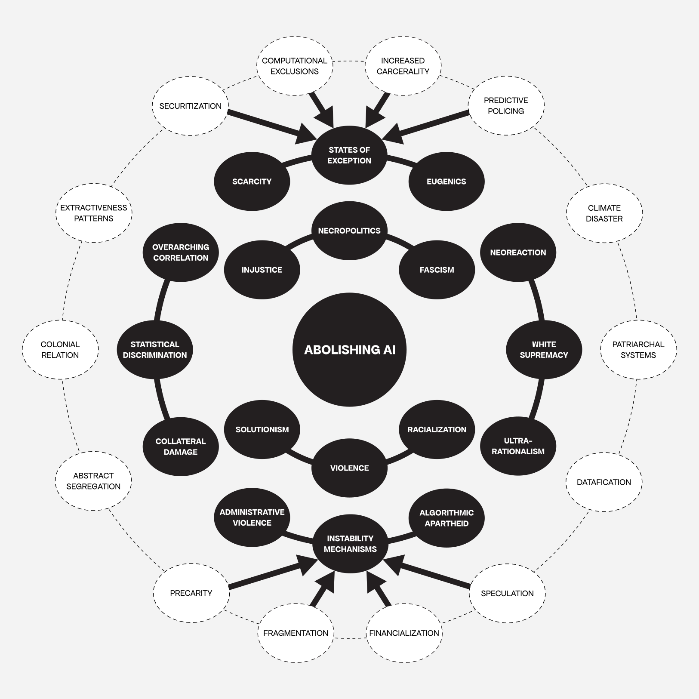

- Manifesto on “Algorithmic Sabotage”
- > This is a preliminary version of a document comprising ten statements, numbered from 0 to 9, which delineate the underlying principles, strategic approaches and aesthetic manifestations of the critical notion of ‘Algorithmic Sabotage’ within the framework of digital culture and information technology.

- Theorizing “Algorithmic Sabotage”
- > This document represents an inaugural attempt at conceptualising the critical concept of ‘Algorithmic Sabotage’ as a means of consciously working on artistic-activist and prefigurative techno-political strategies and aesthetics against the necropolitical technologies that reinforce structural injustices, algorithmic authoritarianism and the harmfulness of unrestrained technosolutionism.

- Intertwined Feedback Loops
- > A series of intertwined feedback loops that unfold from several interrelated briefs, which are designed to facilitate intellectual and practical exploration.
Interventions #

- Police Officers Faces (POF)
- > This is a large-scale face recognition dataset comprising approximately 90,000 headshot photographs of thousands of police officers. It is intended as a tool to empower community members engaged in copwatch and other counter-surveillance practices.

- Communitarian Assembly on ‘Technopolitics of Fronts’
- > A bottom-up, horizontally organised mechanism that functions as a means of uniting the spaces of artistic activism, technical concern and collective action. The Communitarian Assembly on ‘Technopolitics of Fronts’ provide a structure that counterbalances those aspects of computing that are toxic to ethics.
Workshops #

- Illegal Directions ── ‘Algorithmic Sabotage’ & Self-Organization
- > This inaugural workshop, the first in a trilogy of private workshops and talks, constitutes an initiative organized by individuals affiliated with the Algorithmic Sabotage Research Group (ASRG). Entitled Illegal Directions ── ‘Algorithmic Sabotage’ and Self-Organization, the workshop provides an exemplification of the intricate nuances of information ethics and the capacity of aesthetics to traverse the ambiguous and inequitable social terrains shaped by information systems.